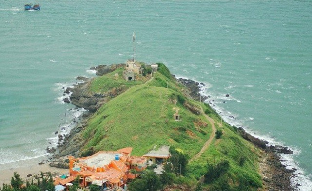
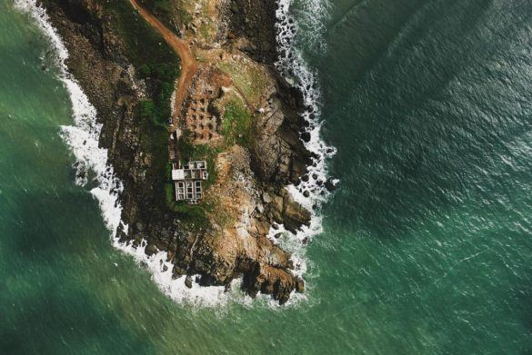

Mũi Nghinh Phong
Khí hậu mát mẻ, gió thổi bốn mùa, cảnh đẹp làm say đắm lòng người khiến Mũi Nghinh Phong luôn là địa điểm du lịch khám phá không thể bỏ qua khi ghé thăm mảnh đất Vũng Tàu. Khung cảnh nên thơ và thanh bình ở đây thu hút biết bao bạn trẻ đến chiêm ngưỡng, hãy cùng bài viết dưới đây tìm hiểu về địa chỉ đang được yêu thích này nhé.
GIỚI THIỆU VỀ MŨI NGHINH PHONG
Là một mũi đất vươn dài ra từ phía nam bán đảo Vũng Tàu, Mũi Nghinh Phong như cánh tay lớn vươn dài ra biển cả, tạo thành 2 vùng vịnh với 2 bãi tắm cực nổi tiếng là bãi Vọng Nguyệt và bãi Hương Phong.
Không chỉ mang nét đẹp thanh bình cực thu hút, Mũi Nghinh Phong Vũng Tàu khiến du khách ghé thăm không nỡ rời chân bởi cảm giác tuyệt vời khi thu vào tầm mắt phía trước là biển xanh thẳm sau lưng là núi rừng kỳ vĩ. Phong cảnh sơn thuỷ hữu tình cùng không gian yên tĩnh độc đáo, mũi Nghinh Phong trở thành địa điểm du lịch khám phá nhất định phải đến khi bạn đặt chân lên mảnh đất thành phố biển Vũng Tàu.
Cái tên Nghinh Phong có nghĩa là “đón gió”, hình ảnh một mũi đất vươn ra giữa biển như hình ảnh mũi con tàu rẽ sóng ra khơi, nơi đây bốn mùa đón gió thổi mang nét vừa mạnh mẽ của thiên nhiên lại tĩnh lặng và xinh đẹp vô cùng.
Bãi tắm của Mũi Nghinh Phong rất đẹp và trong lành, đặc biệt là nước ở bãi Vọng Nguyệt. Tuy nhiên bờ biển ít thoải mà khá sâu hơn so với các bãi khác, nét nên thơ kỳ bí và sự trong xanh của nước khiến bãi Vọng Nguyệt mang một cái đẹp rất riêng, đi vào lòng người.
Với diện tích 1000m2, Mũi Nghinh Phong được quy hoạch du lịch với lối kiến trúc cực kỳ độc đáo và cổ kính với sự quản lý giờ giấc quy củ hơn, bạn có thể tham quan Mũi Nghinh Phong từ 6 – 18h hằng ngày. Đến Mũi Nghinh Phong vào buổi sáng sớm là thời điểm đẹp nhất để bạn có thể ngắm bình minh ló rạng trên biển và nhìn sự thay đổi màu sắc độc đáo của mặt nước biển trong thời khắc mặt trời mọc.
ĐỊA CHỈ MŨI NGHINH PHONG
Địa chỉ Mũi Nghinh Phong: số 1, đường Hạ Long, thành phố Vũng Tàu. Để đi đến Mũi Nghinh Phong bạn nhất định sẽ đi qua tượng Chúa dang tay, bởi vậy nên không hề khó để bạn tìm được địa chỉ này.